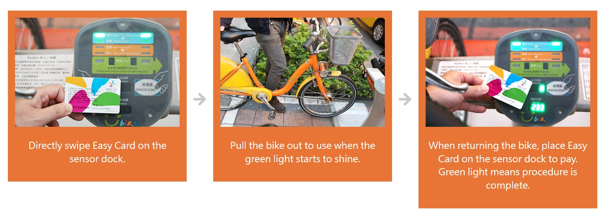

PUBLIC BICYCLES
UBIKE and TBIKE

https://eng.taiwan.net.tw/m1.aspx?sNo=0029052
With an electronic managerial system, YouBike provides rental services throughout the city. The user may rent one bike in a place and return it in another. YouBike makes up for what lacks in the greater public transport system. It is hoped that, with YouBike, people will want to take public transport more. YouBike promotes an environment-friendly lifestyle and a green commute culture.
How to Rent a Bike
1. Swipe the card on the sensor dock. Once the green light is on, pull the bike out to use.
2. When returning the bike, choose an empty dock with a blue light. Press the bike onto the rail and push it to the front. The blue light will start to blink and make beeping sounds when the bike is securely locked into the dock. Swipe the Easy Card or iPASS Card to pay. When all is done, the light turns back to green.
Paying by Credit Card:
1. Choose a payment method at the kiosk and choose a bike. Pull the bike out in 90 seconds to use.
2. When returning the bike, choose an empty dock with a blue light. Press the bike onto the rail and push it to the front. The system will calculate and charge the fees automatically.
Payment
Easy Card / iPASS Card
To use Easy Card or iPASS Card to pay, apply for an account either at a rental KIOSK, on the YouBike website, with the YouBike app, or simply in a service center. The user's cell phone and card numbers are required to apply for an account.
Credit Card
Rent a bike directly from a KIOSK. When returning the bike, the system will automatically charge the fees.

T-Bike will open a new "Xinying Railway Station" to serve you!
Tainan City uses the self-built system T-Bike for public bicycles . The utilization rate has been low since it was put on the road. A few days ago, it was reported that the Tainan City Government has decided to switch to outsourced operation and will fully switch to the Youbike system. There is a vacancy for Tainan Youbike Specialist. As soon as the news came out, many netizens applauded, bluntly saying that T-Bike is super difficult to use and should have been eliminated long ago.
In recent years, the problems of global warming and energy shortage have become more and more apparent, resulting in abnormal climates around the world and soaring oil prices, which have aroused the world's attention to environmental protection and sustainable management; therefore, green policies and thinking such as energy saving, carbon reduction and environmental protection, It has gradually become a key project of government governance performance evaluation. Since motor vehicles (such as automobiles and locomotives) have become one of the main sources of air pollution and energy consumption, in comparison, bicycles have the advantages of no energy consumption and zero pollution, and they have both sports, leisure, commuting, and transportation. Due to the functional characteristics of trains and transfers, it has become a green transport that is strongly promoted by government departments in various countries.